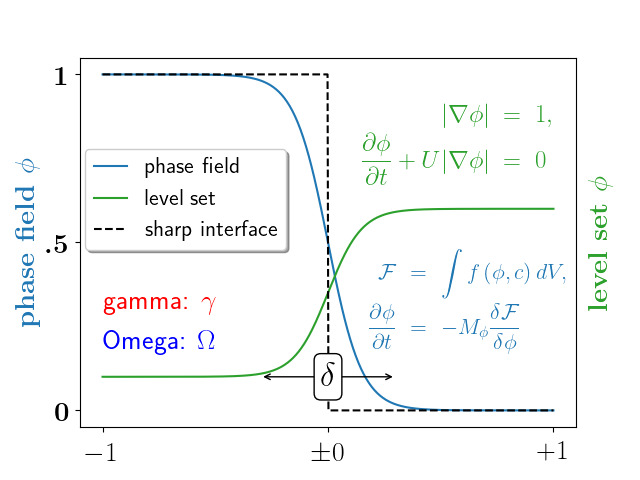

Version 2.2.3
Note
Click here to download the full example code
Shows how to use latex in a plot.
Also refer to the Text rendering With LaTeX guide.
import numpy as np
import matplotlib.pyplot as plt
plt.rc('text', usetex=True)
# interface tracking profiles
N = 500
delta = 0.6
X = np.linspace(-1, 1, N)
plt.plot(X, (1 - np.tanh(4 * X / delta)) / 2, # phase field tanh profiles
X, (1.4 + np.tanh(4 * X / delta)) / 4, "C2", # composition profile
X, X < 0, 'k--') # sharp interface
# legend
plt.legend(('phase field', 'level set', 'sharp interface'),
shadow=True, loc=(0.01, 0.48), handlelength=1.5, fontsize=16)
# the arrow
plt.annotate("", xy=(-delta / 2., 0.1), xycoords='data',
xytext=(delta / 2., 0.1), textcoords='data',
arrowprops=dict(arrowstyle="<->", connectionstyle="arc3"))
plt.text(0, 0.1, r'$\delta$',
{'color': 'k', 'fontsize': 24, 'ha': 'center', 'va': 'center',
'bbox': dict(boxstyle="round", fc="w", ec="k", pad=0.2)})
# Use tex in labels
plt.xticks((-1, 0, 1), ('$-1$', r'$\pm 0$', '$+1$'), color='k', size=20)
# Left Y-axis labels, combine math mode and text mode
plt.ylabel(r'\bf{phase field} $\phi$', {'color': 'C0', 'fontsize': 20})
plt.yticks((0, 0.5, 1), (r'\bf{0}', r'\bf{.5}', r'\bf{1}'), color='k', size=20)
# Right Y-axis labels
plt.text(1.02, 0.5, r"\bf{level set} $\phi$", {'color': 'C2', 'fontsize': 20},
horizontalalignment='left',
verticalalignment='center',
rotation=90,
clip_on=False,
transform=plt.gca().transAxes)
# Use multiline environment inside a `text`.
# level set equations
eq1 = r"\begin{eqnarray*}" + \
r"|\nabla\phi| &=& 1,\\" + \
r"\frac{\partial \phi}{\partial t} + U|\nabla \phi| &=& 0 " + \
r"\end{eqnarray*}"
plt.text(1, 0.9, eq1, {'color': 'C2', 'fontsize': 18}, va="top", ha="right")
# phase field equations
eq2 = r'\begin{eqnarray*}' + \
r'\mathcal{F} &=& \int f\left( \phi, c \right) dV, \\ ' + \
r'\frac{ \partial \phi } { \partial t } &=& -M_{ \phi } ' + \
r'\frac{ \delta \mathcal{F} } { \delta \phi }' + \
r'\end{eqnarray*}'
plt.text(0.18, 0.18, eq2, {'color': 'C0', 'fontsize': 16})
plt.text(-1, .30, r'gamma: $\gamma$', {'color': 'r', 'fontsize': 20})
plt.text(-1, .18, r'Omega: $\Omega$', {'color': 'b', 'fontsize': 20})
plt.show()
Keywords: matplotlib code example, codex, python plot, pyplot Gallery generated by Sphinx-Gallery